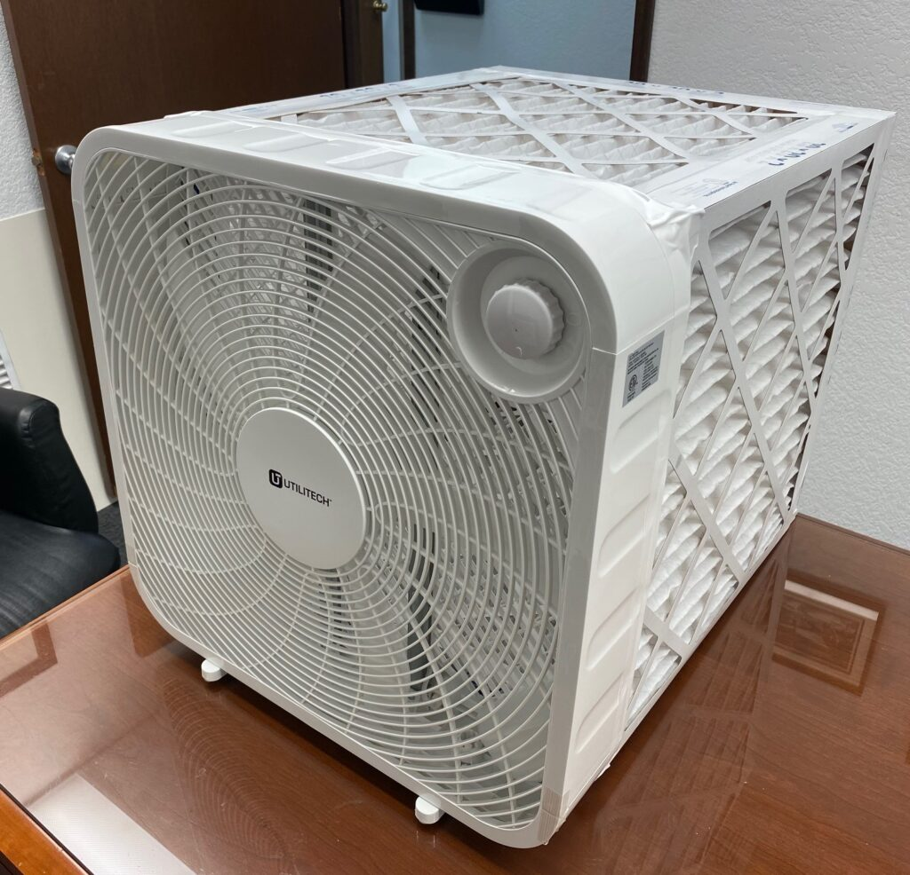

Real-time readings from the sensor in your home, updated every minute.
This page requires a sensor token in the URL.
Please scan the QR code on your sensor device.
Air Quality Metrics
Your sensor tracks six key indicators of indoor air quality. Here's what each one means for your health and comfort.
Tiny particles that travel deep into your lungs. Sources include smoke, dust, and vehicle exhaust. Good: below 12 µg/m³.
A marker of ventilation. High indoor levels (>1,000 ppm) cause drowsiness. Open a window if it rises.
Extreme heat and cold both affect health — especially for children and older adults. Comfort range: 64–79 °F.
Too dry irritates airways; too humid promotes mold and dust mites. Ideal range: 30–50% RH.
Gases from cleaning products, paints, and air fresheners. Can affect respiratory health. Lower is always better.
Historical Data
Select a parameter and view to explore your sensor's historical data.
Air Purification
The Corsi-Rosenthal (CR) Box is a low-cost, high-efficiency do-it-yourself (DIY) air purifier built from a box fans and MERV-13 filters that can significantly reduce indoor PM2.5 concentrations. It will be provided to all participants who are interested in using one in their homes during the second phase of the study. During this phase, we will continue monitoring PM2.5 levels and evaluate the effectiveness of the CR Box in reducing indoor air pollution. More information on how to use and maintain your unit will be provided soon.

This project is led by Drexel University's Department of Civil, Architectural and Environmental Engineering, funded by the William Penn Foundation. We are working with communities in four Philadelphia neighborhoods — Point Breeze, Grays Ferry, Haddington, and Kingsessing — to monitor indoor air quality and reduce PM2.5 exposure.
Your participation directly contributes to research that will help improve air quality across Philadelphia's environmental justice communities.